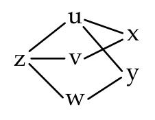
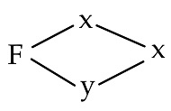
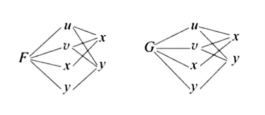
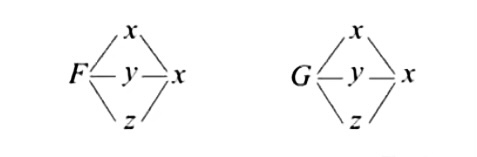

高等数学-多元函数微分学的概念与计算。
本文索引
概念
基本概念
- 邻域
设 M0 为平面上一个点，\(\delta\) 为正数，M 为平面上的点，则 \(\{M \vert \rho(M_0,M) < \delta\}\) 为点 M0 的『\(\delta\) 邻域』，记作 \(U(M_0,\delta)\)，\(\{M \vert 0 < \rho(M_0,M) < \delta\}\) 为点 M0 的『去心 \(\delta\) 邻域』，记作 \(\mathring{U}(M_0,\delta)\)。
- 边界
给定平面上的一个点集 E，若 \(\exists \delta > 0\)，使得 \(U(M,\delta) \subset E\)，则 M 为点集 E 的『内点』。若 \(\exists \delta > 0\)，使得 \(U(M,\delta) \cap E = \varnothing\)，则 M 为点集 E 的『外点』。若对于 \(\forall \delta > 0\)，\(U(M,\delta)\) 中既有 E 中的点也有 E 外的点，则 M 为点集 E 的『边界点』。
点集 E 的所有边界点的集合称为 E 的『边界』，记作 \(\partial E\)。
- 区域
设 E 是一个平面点集，对于其中的任意两点，都可用一条完全属于 E 的曲线将这两点连起来，则这样的 E 为『连通集』。连通的开集称为『开区域』，一个开区域和它的边界的并集称为『闭区域』。
设 E 是一个区域，若其中任意一条不交叉的简单闭曲线的内部还在 E 内，则 E 称为『单连通区域』，否则称为『多连通区域』。
- 聚点
设 E 是一个平面点集，M0 是平面上一个点，若对于 \(\forall \delta > 0\)，总有 \(\mathring{U}(M_0,\delta) \cap E \neq \varnothing\)，则称 M0 为 E 的『聚点』。开区域的内点和边界点都是聚点，闭区域内的任何一点都是聚点。
极限
设二元函数 \(f(P) = f(x,y)\) 的定义域为 D，\(P(x_0,y_0)\) 是 D 的聚点如果存在常数 A，对于 \(\forall \varepsilon > 0\)，都 \(\exists \delta > 0\)，使得但点 \(P(x,y) \in D \cap \mathring{U}(P_0,\delta)\) 时，都有
\[ \left|f(x,y) - A\right| < \varepsilon \]
则称 A 为 \(f(x,y)\) 当 \((x,y) \to (x_0,y_0)\) 时的『极限』，记作
\[ \lim_{(x,y) \to (x_0,y_0)}f(x,y) = A \; \text{or} \; f(x,y) \to A \;((x,y) \to (x_0,y_0)) \]
连续
若 \(\lim_{(x,y) \to (x_0,y_0)} f(x,y) = f(x_0,y_0) \Leftrightarrow f(x,y)\) 在点 \((x_0,y_0)\) 处『连续』。
多元函数的间断点类型不在考试范围内。
偏导数
设函数 \(z =f(x,y)\) 在点 \((x_0,y_0)\) 的某邻域内有定义，若极限
\[ \lim _{\Delta x \to 0}\frac{f(x_0+\Delta x,y_0)-f(x_0,y_0)}{\Delta x} \]
存在，则称此极限为 \(f(x,y)\) 在点 \((x_0,y_0)\) 处对 x 的『偏导数』，记作
\[ f'_x(x_0,y_0) \; \text{or} \; z'_x\bigg |_{x = x_0,y=y_0} \; \text{or} \; \frac{\partial f}{\partial x} \bigg |_{x = x_0,y=y_0} \; \text{or} \; \frac{\partial z}{\partial x} \bigg |_{x = x_0,y=y_0} \]
故 \(f(x,y)\) 的偏导数：
\[ \begin{aligned} & f'_x(x_0,y_0) = \lim_{\Delta x \to 0}\frac{f(x_0+\Delta x,y_0)-f(x_0,y_0)}{\Delta x} = \lim_{x \to x_0}\frac{f(x,y) - f(x_0,y_0)}{x - x_0} \\ & f'_y(x_0,y_0) = \lim_{\Delta y \to 0}\frac{f(x_0,y_0 + \Delta y)-f(x_0,y_0)}{\Delta y} = \lim_{y \to y_0}\frac{f(x,y) - f(x_0,y_0)}{y - y_0} \end{aligned} \]
若函数 \(z = f(x,y)\) 在区域 D 内的偏导数 \(f'_x(x,y),f'_y(x,y)\) 仍具有偏导数，则它们的偏导数称为 \(f(x,y)\) 的『二阶偏导数』，根据对变量求导的顺序不同分为四个二阶偏导数：
\[ \begin{aligned} & \frac{\partial}{\partial x}\left(\frac{\partial z}{\partial x}\right) = \frac{\partial^2 z}{\partial x^2} = f''_{xx}(x,y), \quad \frac{\partial}{\partial y}\left(\frac{\partial z}{\partial y}\right) = \frac{\partial^2 z}{\partial y^2} = f''_{yy}(x,y), \\ & \frac{\partial}{\partial y}\left(\frac{\partial z}{\partial x}\right) = \frac{\partial^2 z}{\partial x\partial y} = f''_{xy}(x,y), \quad \frac{\partial}{\partial x}\left(\frac{\partial z}{\partial y}\right) = \frac{\partial^2 z}{\partial y\partial x} = f''_{yx}(x,y) \end{aligned} \]
其中 \(f''_{xy}(x,y),f''_{yx}(x,y)\) 称为『二阶混合偏导数』。
注：求偏导数时把求导变量之外的变量视为常数。
可微
函数 \(z = f(x,y)\) 在点 \((x,y)\) 处的『全增量』 \(\Delta z = f(x + \Delta x, y + \Delta y) - f(x,y)\) 可表示为
\[ \Delta z = A\Delta x + B\Delta y + o(\rho) \]
其中 \(\rho = \sqrt{(\Delta x)^2 + (\Delta y)^2}\)，\(A,B\) 不依赖于 \(\Delta x,\Delta y\) 仅与 \(x,y\) 有关，则称函数 \(z = f(x,y)\) 在点 \((x,y)\) 处『可微』，称 \(A\Delta x + B\Delta y\) 为函数 \(z =f(x,y)\) 在点 \((x,y)\) 处的『全微分』，记作
\[ \text{d} z = A\Delta x + B\Delta y \]
定理：若函数 \(z = f(x,y)\) 在点 \((x,y)\) 处可微，则函数在该点的偏导数必存在，则函数在该点的全微分为：
\[ \begin{aligned} \text{d} z& = f'_x(x,y)\Delta x + f'_y(x,y)\Delta y \\ & = \frac{\partial z}{\partial x}\text{d} x + \frac{\partial z}{\partial y}\text{d} y \end{aligned} \]
判断函数 \(z = f(x,y)\) 在点 \((x_0,y_0)\) 处可微：
- 写出全增量 \(\Delta z = f(x_0 + \Delta x, y_0 + \Delta y)-f(x,y)\)。
- 写出线性增量 \(f'_x(x_0,y_0)\Delta x + f'_y(x_0,y_0)\Delta y\)。
- 计算极限
\[ \lim_{\Delta x \to 0,\Delta y \to 0} \frac{\Delta z - (f'_x(x_0,y_0)\Delta x + f'_y(x_0,y_0)\Delta y)}{\sqrt{(\Delta x)^2 + (\Delta y)^2}} \]
若该极限等于 0，则 \(f(x,y)\) 在点 \((x_0,y_0)\) 处可微，否则不可微。
偏导数的连续性
判断函数 \(z = f(x,y)\) 在某特殊点 \((x_0,y_0)\) 处（如分段点）偏导数是否连续：
- 定义法求 \(f'_x(x_0,y_0),f'_y(x_0,y_0)\)。
- 用公式法求 \(f'_x(x,y),f'_y(x,y)\)。
- 计算极限
\[ \lim_{x \to x_0,y \to y_0}f'_x(x_0,y_0),\lim_{x \to x_0,y \to y_0}f'_y(x_0,y_0) \]
- 若求出的两个极限与定义法求出的偏导数相等，则 \(f(x,y)\) 在点 \((x_0,y_0)\) 处的偏导数连续。
重要结论：两个偏导数连续，则二阶混合偏导数相等。
计算
多元复合函数求导
全导数
若 \(z =f(u,v),\; u = u(x),\; v = v(x)\)，即 z 最终是关于单一变量 x 的函数，则 \(\frac{\text{d} z}{\text{d} x}\) 称为该函数的『全导数』，记作
\[ \frac{\text{d} z}{\text{d} x} = \frac{\partial z}{\partial u}\frac{\text{d} u}{\text{d} x} + \frac{\partial z}{\partial v}\frac{\text{d} v}{\text{d} x} \]
链式求导规则
画出函数的复合结构图。
对哪个变量求导，就寻找通向这个变量的所有路线。
将所有路线求得的导数相加。
\[ \text{e.g.} \; z = f(u,v,w),\; u =u(x,y),\; v = v(x),\; w = w(y) \\ \]

\[ \begin{aligned} & \frac{\partial z}{\partial x} = \frac{\partial z}{\partial u}\frac{\partial u}{\partial x} + \frac{\partial z}{\partial v}\frac{\text{d} v}{\text{d} x}\\ & \frac{\partial z}{\partial y} = \frac{\partial z}{\partial u}\frac{\partial u}{\partial y}+\frac{\partial z}{\partial w}\frac{\text{d} w}{\text{d} y} \end{aligned} \]
注：无论 z 对哪个变量求导，也无论 z 已经求了几阶导，求导后的新函数仍然具有与原本函数完全相同的复合结构。
全微分形式不变性
函数 \(z =f(u,v)\) 可微，则其全微分为
\[ \text{d}z = \frac{\partial z}{\partial u}\text{d}u + \frac{\partial z}{\partial v}\text{d}v \]
若 \(u,v\) 作为函数的中间变量，是自变量 \(x,y\) 的可微函数 \(u =u(x,y),\;v=v(x,y)\)，则复合函数 \(z = f(u(x,y),v(x,y))\) 也是可微的，其全微分为
\[ \text{d} z = \frac{\partial z}{\partial x}\text{d}x + \frac{\partial z}{\partial y}\text{d}y \]
多元隐函数求导
一个二元方程的隐函数
设函数 \(F(x,y)\) 在点 \(P(x_0,y_0)\) 的某一邻域内具有连续偏导数，若 \(F(x_0,y_0) = 0,\;F'_y(x_0,y_0) \neq 0\)，则方程 \(F(x,y) = 0\) 在点 \((x_0,y_0)\) 的某一邻域内能唯一确定一个连续且具有连续导数的函数 \(y = f(x)\)，且有
\[ \frac{\text{d}y}{\text{d}x} = - \frac{F'_x}{F'_y} \]
- \(x,y\) 是当作独立的中间变量，不必在意 \(x,y\) 之间的关系。之后的两个情景同理。
- 推导：\(F(x,y(x))=0\) 的复合结构如图：

方程两侧对 x 求导：
\[ F'_x \frac{\text{d}x}{\text{d}x} + F'_y \frac{\text{d}y}{\text{d}x} = 0 \]
故当 \(F'_y \neq 0\) 时，\(\frac{\text{d}y}{\text{d}x} = - \frac{F'_x}{F'_y}\)。
一个多元方程的隐函数
设函数 \(F(x,y,z)\) 在点 \(P(x_0,y_0,z_0)\) 的某一邻域内具有连续偏导数，若 \(F(P_0) = 0,\;F'_z(P_0) \neq 0\)，则方程 \(F(x,y,z) = 0\) 在点 \(P_0\) 的某一邻域内能唯一确定一个连续且具有连续导数的函数 \(z = z(x,y)\)，且有
\[ \begin{aligned} \frac{\partial z}{\partial x} = -\frac{F'_x}{F'_z},\;\frac{\partial z}{\partial y} = -\frac{F'_y}{F'_z} \end{aligned} \]
多元方程组的隐函数
设 \(\left\{ \begin{aligned}&F(x,y,u,v) =0 \\ &G(x,y,u,v) = 0 \end{aligned}\right.\)，若记
\[ \left|\begin{matrix} F'_u &F'_v \\ G'_u &G'_v \end{matrix}\right | = \frac{\partial(F,G)}{\partial(u,v)} \]
此处为二阶雅可比行列式。
则当满足 \(\frac{\partial(F,G)}{\partial(u,v)} \neq 0\) 时，可确定 \(\left\{ \begin{aligned}&u=u(x,y)\\ &v = v(x,y)\end{aligned}\right.\)。

且有
\[ \begin{aligned} &\frac{\partial u}{\partial x} = -\frac{\frac{\partial(F,G)}{\partial (x,v)}}{\frac{\partial (F,G)}{\partial (u,v)}}, \quad \frac{\partial v}{\partial x} = -\frac{\frac{\partial(F,G)}{\partial (u,x)}}{\frac{\partial (F,G)}{\partial (u,v)}}, \\ &\frac{\partial u}{\partial y} = -\frac{\frac{\partial(F,G)}{\partial (y,v)}}{\frac{\partial (F,G)}{\partial (u,v)}}, \quad \frac{\partial v}{\partial y} = -\frac{\frac{\partial(F,G)}{\partial (u,y)}}{\frac{\partial (F,G)}{\partial (u,v)}} \end{aligned} \]
简单形式：设 \(\left\{ \begin{aligned}&F(x,y,z) =0 \\ &G(x,y,z) = 0 \end{aligned}\right.\)，当满足 \(\frac{\partial(F,G)}{\partial(y,z)} \neq 0\) 时，可确定 \(\left\{ \begin{aligned}& y =y(x) \\ &z =z(x) \end{aligned}\right.\)，其复合结构图为

且有
\[ \frac{\text{d}y}{\text{d}x} = \frac{\frac{\partial(F,G)}{\partial(x,z)}}{\frac{\partial(F,G)}{\partial(y,z)}}, \quad \frac{\text{d}z}{\text{d}x} = \frac{\frac{\partial(F,G)}{\partial(y,x)}}{\frac{\partial(F,G)}{\partial(y,z)}} \]
多元函数的极值和最值
二元函数的泰勒公式
设 \(f(x,y)\) 二阶偏导数连续，记 \(P_0 = (x_0,y_0)\)，\(\Delta x = x -x_0\)，\(\Delta y = y -y_0\)，则
\[ f(x, y)=f\left(x_{0}, y_{0}\right)+\left[\begin{array}{ll} f_{x}^{\prime} & f_{y}^{\prime} \end{array}\right]_{P_0}\left[\begin{array}{c} \Delta x \\ \Delta y \end{array}\right]+ \frac{1}{2 !} \left[\begin{array}{ll} \Delta x & \Delta y \end{array}\right]\left[\begin{array}{cc} f_{x x}^{\prime \prime} & f_{x y}^{\prime \prime} \\ f_{y x}^{\prime \prime} & f_{y y}^{\prime \prime} \end{array}\right]_{P_0}\left[\begin{array}{l} \Delta x \\ \Delta y \end{array}\right]+R_{2} \]
无条件极值
\(f(x,y)\) 取极值的必要条件：
极值点必为驻点，设 \(P_0 = (x_0,y_0)\) 为驻点，则
\[ \left\{\begin{aligned}&f'_x(x_0,y_0) = 0 \\ &f'_y(x_0,y_0) = 0 \end{aligned}\right. \Rightarrow \left[\begin{matrix}f'_x &f'_y\end{matrix}\right]_{P_0}= \boldsymbol{0} \]
\(f(x,y)\) 取极值的充分条件：
\[ \left[\begin{matrix}f'_x &f'_y\end{matrix}\right]_{P_0}= \boldsymbol{0} \xrightarrow{Taylor} f(x,y) - f(x_0,y_0) = \frac{1}{2 !} \left[\begin{array}{ll} \Delta x & \Delta y \end{array}\right]\left[\begin{array}{cc} f_{x x}^{\prime \prime} & f_{x y}^{\prime \prime} \\ f_{y x}^{\prime \prime} & f_{y y}^{\prime \prime} \end{array}\right]_{P_0}\left[\begin{array}{l} \Delta x \\ \Delta y \end{array}\right]+R_{2} \]
记 \(\left\{ \begin{aligned} &f''_{xx}(x_0,y_0) = A \\ & f''_{xy}(x_0,y_0) = f''_{yx}(x_0,y_0) = B \\ &f''_{yy}(x_0,y_0) = C \end{aligned}\right.\)，则
- 当 \(\Delta = AC - B^2 > 0\) 且 \(A > 0\) 时，\(f(x_0,y_0)\) 为极小值。
- 当 \(\Delta = AC - B^2 > 0\) 且 \(A < 0\) 时，\(f(x_0,y_0)\) 为极大值。
- 当 \(\Delta = AC - B^2 > 0\) 时，\(f(x_0,y_0)\) 非极值。
- 当 \(\Delta = AC - B^2= 0\) 时，无法判别是否为极值。
注：该充分条件不适用于三元及以上的函数。
条件极值
二元情况：
函数 \(u =f(x,y)\) 在条件 \(\varphi(x,y) = 0\) 下取得最值，则
- 构造辅助函数 \(F(x,y,\lambda) = f(x,y) + \lambda\varphi(x,y)\)
- 令
\[ \left\{ \begin{aligned} & F'_x = f'_x + \lambda \varphi'_x = 0 \\ & F'_y = f'_y + \lambda \varphi'_y = 0 \\ & F'_{\lambda} = \varphi(x,y,z) = 0 \end{aligned} \right. \]
- 解上述方程组得到备选点 \(P_i\;(i = 1,2,\ldots)\)，在备选点中计算最大值和最小值。
三元情况：
函数 \(u =f(x,y,z)\) 在条件 \(\left\{ \begin{aligned}&\varphi(x,y,z) = 0 \\ &\psi(x,y,z) = 0 \end{aligned}\right.\) 下取得最值，则
- 构造辅助函数 \(F(x,y,z,\lambda,\mu) = f(x,y,z) + \lambda\varphi(x,y,z) + \mu\psi(x,y,z)\)
- 令
\[ \left\{ \begin{aligned} & F'_x = f'_x + \lambda \varphi'_x + \mu\psi'_x= 0 \\ & F'_y = f'_y + \lambda \varphi'_y + \mu\psi'_y = 0 \\ & F'_z = f'_z + \lambda \varphi'_z + \mu\psi'_z = 0 \\ & F'_{\lambda} = \varphi(x,y,z) = 0 \\ & F'_{\mu} = \psi(x,y,z) = 0 \end{aligned} \right. \]
- 解上述方程组得到备选点 \(P_i\;(i = 1,2,\ldots)\)，在备选点中计算 \(f(P_i)\) 最大值和最小值。